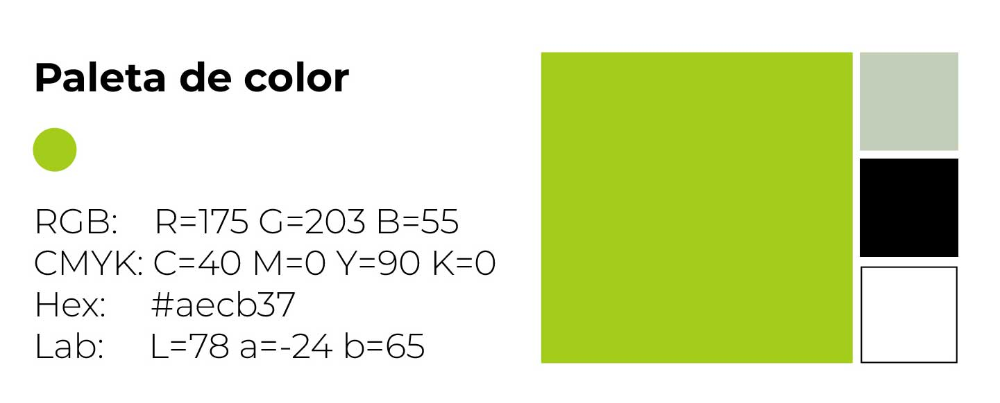
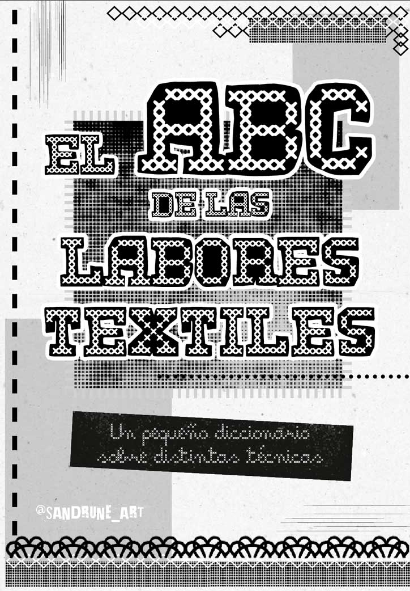
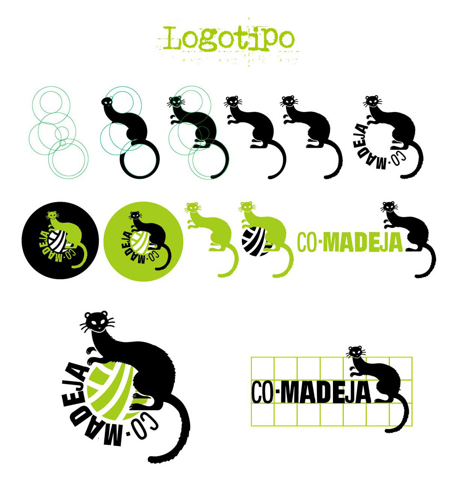
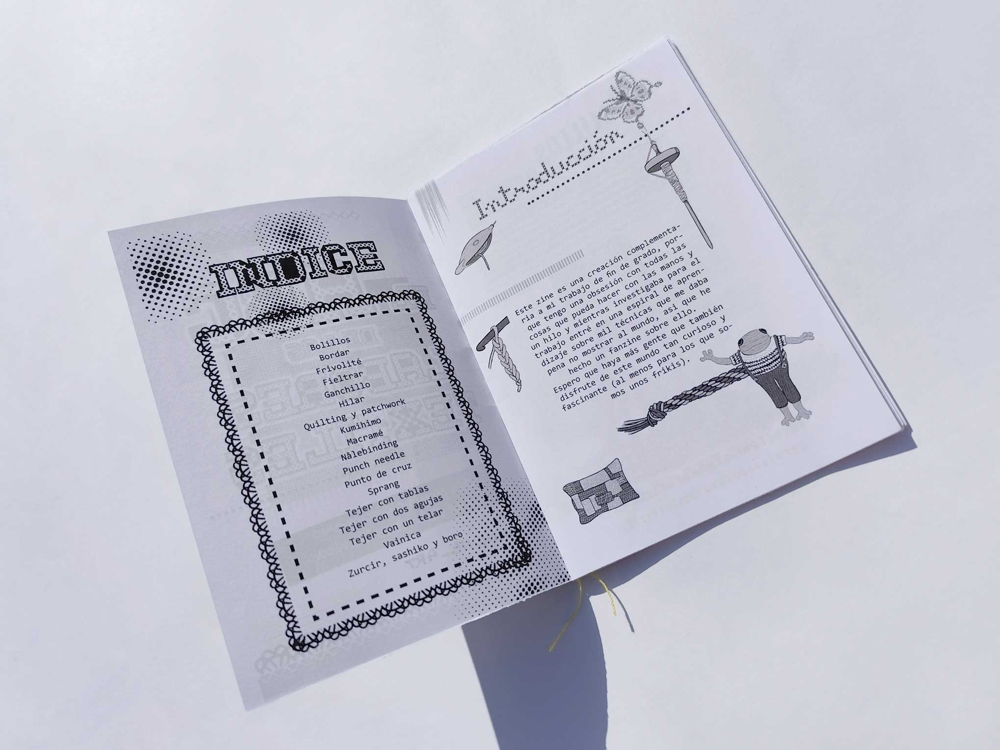
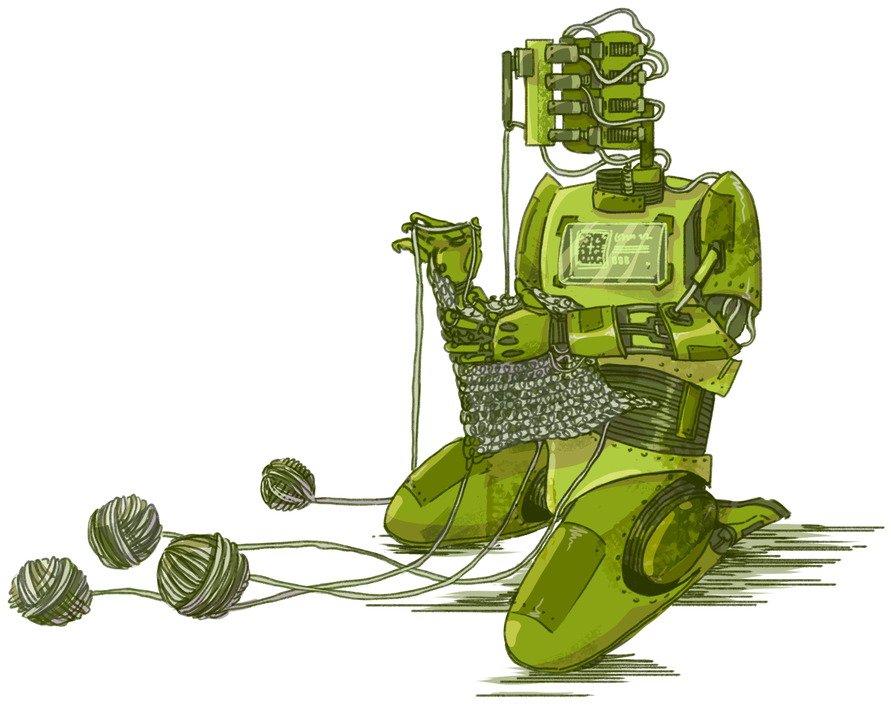
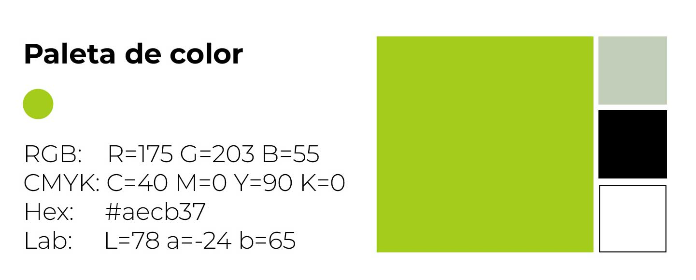
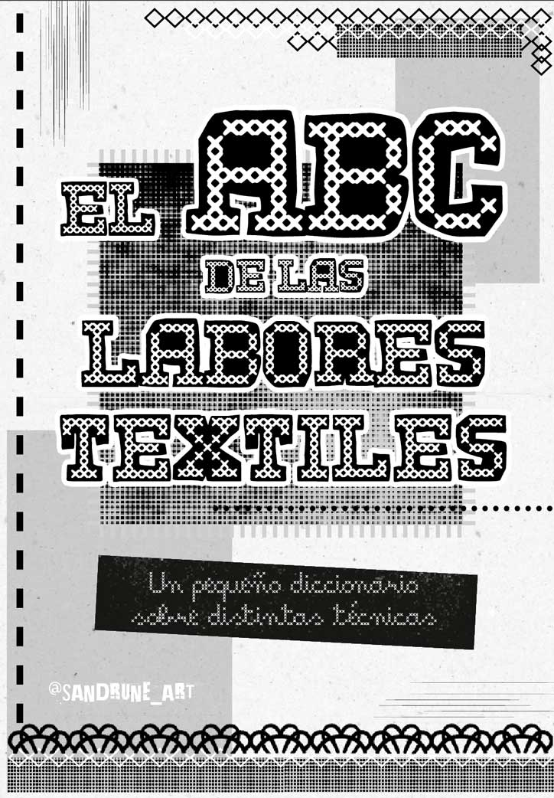
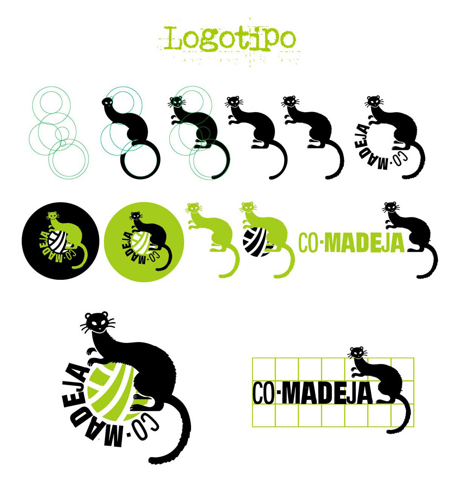
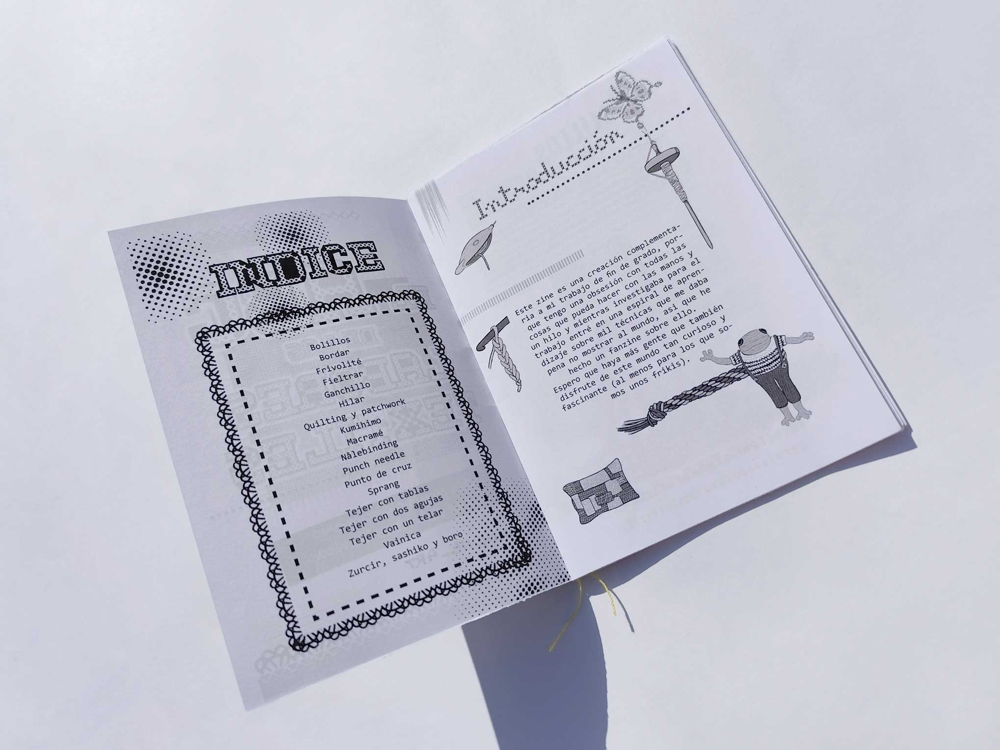
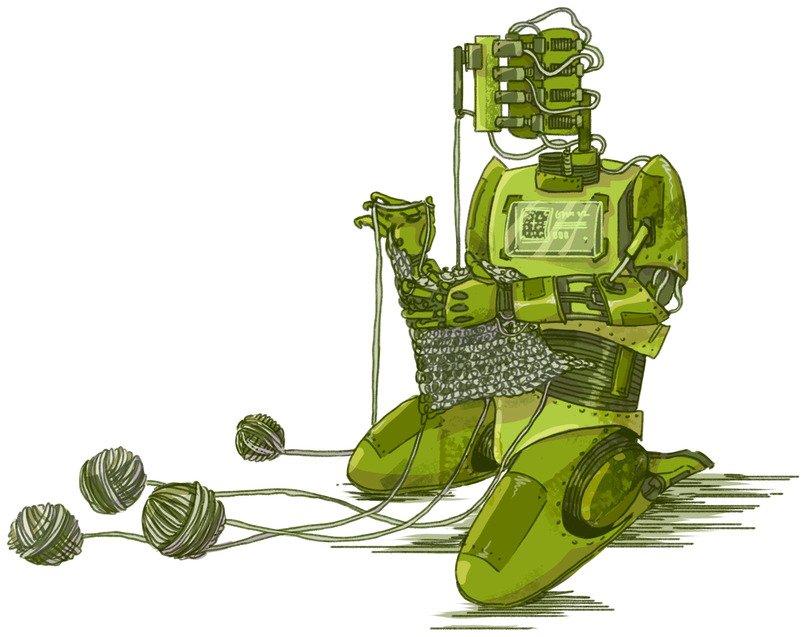

 VOLVER A ARCHIVO
VOLVER A ARCHIVO
Comadeja es una revista sobre ganchillo influenciada por la cultura del DIY, el punk y el deseo de hacer accesible esta actividad entre nuevas personas interesadas en ella, especialmente personas jóvenes y con unos intereses alternativos. Es un proyecto editorial que surgió como trabajo de fin de grado motivado por el aumento de la popularidad que esta artesanía ha experimentado en los últimos años.


Ermes Olea
Madrid, España | sandrune.art
Porfolio 2025/2026